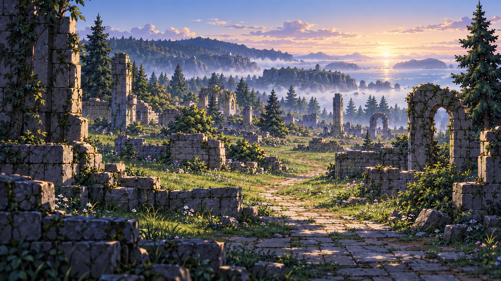
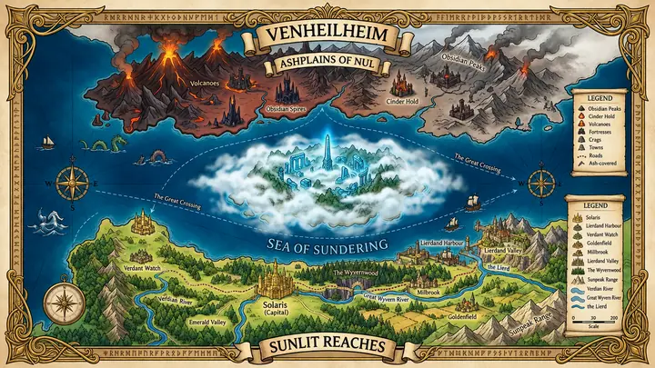
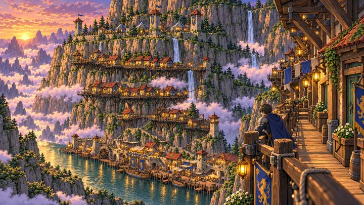
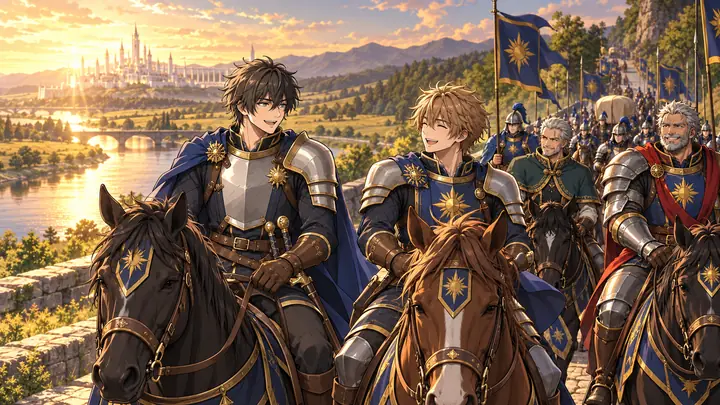
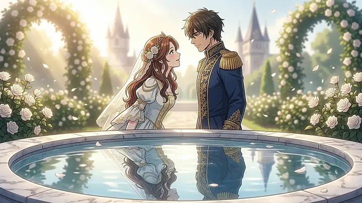
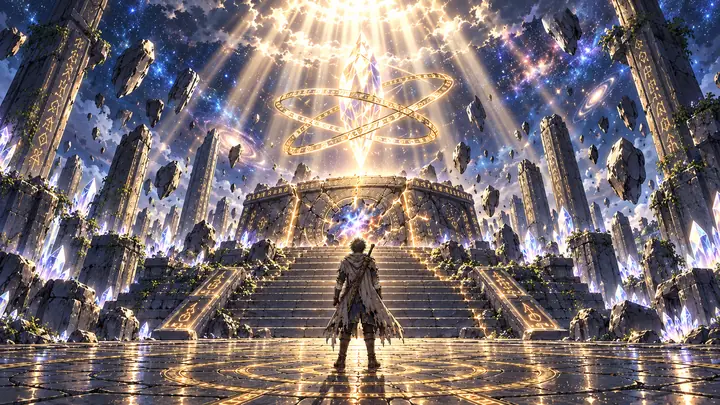
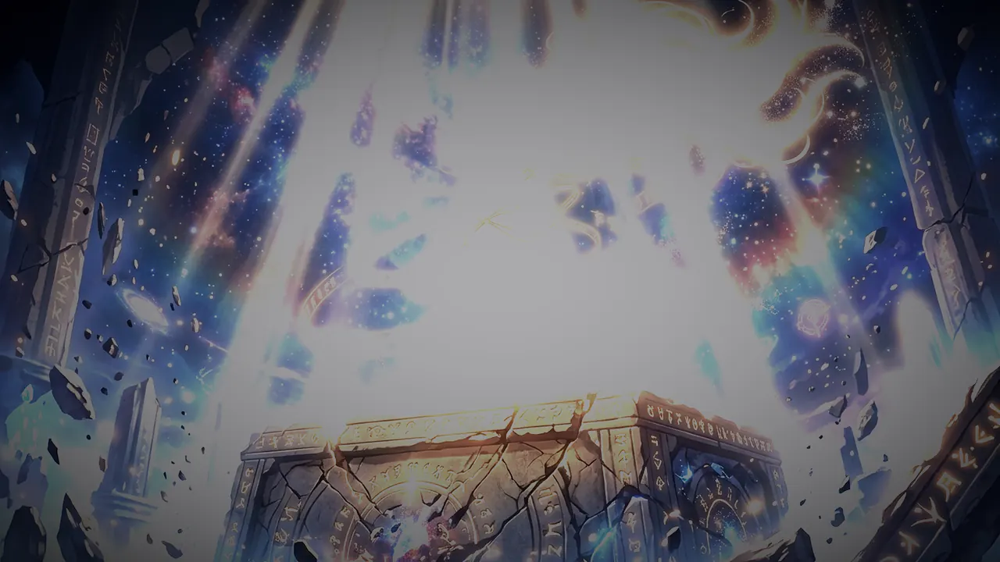

Steer Ren through the body
Ren isn't a mana bar. Hold R and guide it along the meridians, to the arms for a blade or a beam, to the legs for a step, to the core for a guard. Every technique strains the meridians. Push too far and they seize.

Prologue & Act I · Free
On his wedding day, a young King loses his bride, his power and his world. Across the sea of mist he finds the energy the world forgot.
Windows · Android · Linux
The story
The Humans of the Sunlit Reaches draw their strength from Aura and build it, over years, into a Core. The crimson-skinned Uren of the Ashplains of Nul wield Miasma. Twenty years ago their hatred became war, and an uneasy peace has held since.
Eirik is the newly crowned Human King. At his wedding to Syra a cursed gift shatters his Aura Core, and a rift throws him across the sea to Venheilheim, the island behind walls of mist that no ship has ever reached.
There, among silent ruins, he learns of Ren, the primordial energy the first people wielded directly, which needs no Core at all. His first reason to master it is revenge.


River pirates are choking the kingdom's trade, so the King has come to Lierdand Valley himself. Learn to move and fight, spar by firelight, then lead the assault on the pirates' hideout in the Wyvernwood.

Down the river and through the harbour, by galley to Solaris's River Gate, and up through the cheering city to the castle, the night before his wedding.

A morning in Castle Solaris: the gardens, the city, the people. Then the Royal Chapel, the vows, and a gift from the north.

Wake in the ruins of Venheilheim with nothing. Find a sword, uncover the Cradle and its guardian light, train in the forgotten discipline of Ren, and build a ship to cross the sea.
From the game
The comic panels and words that open the Prologue, exactly as they play in the game. Swipe, tap the arrows or use your arrow keys.

Gameplay
Ren isn't a mana bar. Hold R and guide it along the meridians, to the arms for a blade or a beam, to the legs for a step, to the core for a guard. Every technique strains the meridians. Push too far and they seize.
There are no waypoints. Townsfolk, soldiers and old tablets tell you where to go, and your questbook keeps what you've been told. The world is hand-made: terraced valleys, a royal capital, harbours and ancient ruins.
Sword, heavy blows, guard, parry and dodge, with companions at your side. Storm a log stockade, haul down a river chain, face a pirate captain, and later survive what waits in the Sea of Sundering.
Fell timber, search abandoned hamlets for iron, rope and sailcloth, then fit the keel, nail the hull and raise the mast with your own hands, before sailing into the mist.
Gallery
Screenshots from the game, and panels from its comic scenes. Tap any picture to see it larger.
Free download
Prologue and Act I, version 0.64.8. No account, no install wizard: download, open, play.
chmod +x venheilheim.x86_64
./venheilheim.x86_64Controls
The game teaches each control when you first need it. Here are the basics.
An on-screen stick moves Eirik and buttons appear for each action as he learns it. Tap Sprint to run and tap again to walk. Dialogue and comic scenes advance with a tap, and every scene has a Skip tab.
Controllers work too: the left stick moves and the face buttons attack, dodge and interact.